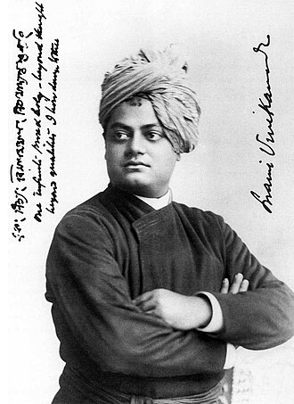

1863-1902
"You cannot believe in God until you believe in yourself. Arise,awake and do not stop until the goal is reached"
A spiritual genius of commanding intellect and power, Vivekananda crammed immense labor and achievement into his short life, 1863-1902. Born in the Datta family of Calcutta, the youthful Vivekananda embraced the agnostic philosophies of the Western mind along with the worship of science. At the same time, vehement in his desire to know the truth about God, he questioned people of holy reputation, asking them if they had seen God. He found such a person in Sri Ramakrishna, who became his master, allayed his doubts, gave him God vision, and transformed him into sage and prophet with authority to teach. After Sri Ramakrishna's death, Vivekananda renounced the world and criss-crossed India as a wandering monk. His mounting compassion for India's people drove him to seek their material help from the West. Accepting an opportunity to represent Hinduism at Chicago's Parliament of Religions in 1893, Vivekananda won instant celebrity in America and a ready forum for his spiritual teaching. For three years he spread the Vedanta philosophy and religion in America and England and then returned to India to found the Ramakrishna Math and Mission. Exhorting his nation to spiritual greatness, he wakened India to a new national consciousness. He died July 4, 1902, after a second, much shorter sojourn in the West.